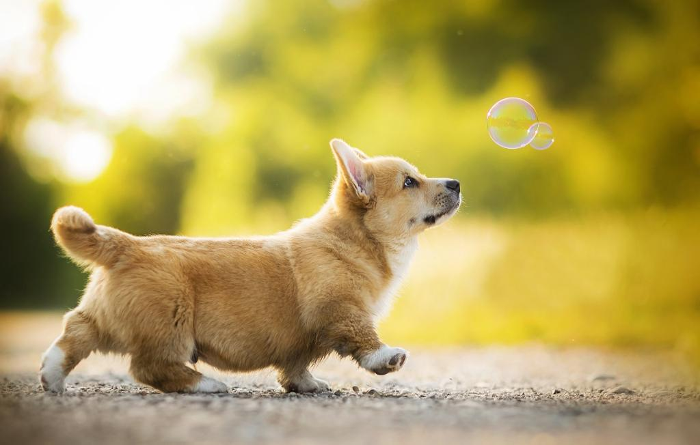

|
Породы собак:
|

1. Введение
Их отличает добродушный, весёлый характер, высокий интеллект. Корги — настоящая овчарка в маленьком теле. Эти собаки очень умны и хитры, могут быть упрямы, поэтому важно не упустить отдельные моменты в воспитании. Рекомендую пройти курс занятий по послушанию со специалистами, чтобы в дальнейшем избежать проблем с воспитанием. Корги ориентированы на человека и стараются подстроиться под его образ жизни.
2. Достоинства и недостатки породы
Как у любой другой породы, у корги есть свои преимущества и недостатки.
| Минусы |
Плюсы |
| Корги склонны к перееданию и, как следствие, к ожирению.
Не следует перекармливать пса, пища должна быть калорийной, но не обильной.
Из-за густого подшерстка требуют планомерного ухода за шерстью, особенно в период линьки.
В начале линьки рекомендуется хорошо вычесать собаку.
Ненадежные охранники и сторожа территории из-за повышенного человеколюбия.
Хватают людей за ноги, за пятки, особенно молодые собаки.
По своей природе корги – не сторожевые, а пастушьи собаки. Гены предков заставляют собирать людей «в стадо».
Не ведающие страха, не задумываясь, ввязываются в драку с более крупными представителями собачьих пород.
Корги обладают громким и пронзительным голосом, громко лают.
Когда пес не виден, кажется, что лает крупная собака.
Активная собака, любит много бегать, не переносит одиночество.
Требуются длительные прогулки.
Много заболеваний. |
Человекоориентированные собаки, любят общество, особенно детей, прекрасные компаньоны.
Не эгоистичны, не требуют повышенного внимания к своей персоне, не навязчивы.
Пригодны для содержания в квартире, имеют небольшие размеры.
Хорошо дрессируются и социализируются.
Более контактные и жизнерадостные. Легко уживается с детьми и другими животными в семье.
Больше подходят для владения физически активным людям, они любят много бегать, плавать, резвиться, легко возбудимы, но и хорошо управляемы.
Имеют живой темперамент.
Рассудительны, уравновешенны, нацелены на хозяина, чувствуют его настроение.
Более понятливы, лучше дрессируются, любят проявлять свои рабочие качества.
Задорные и сообразительные.
Добрые и покладистые.
Любопытные, а осторожные, предпочитают держаться поближе к хозяину. |
Это всё, спасибо за внимание!!!
|